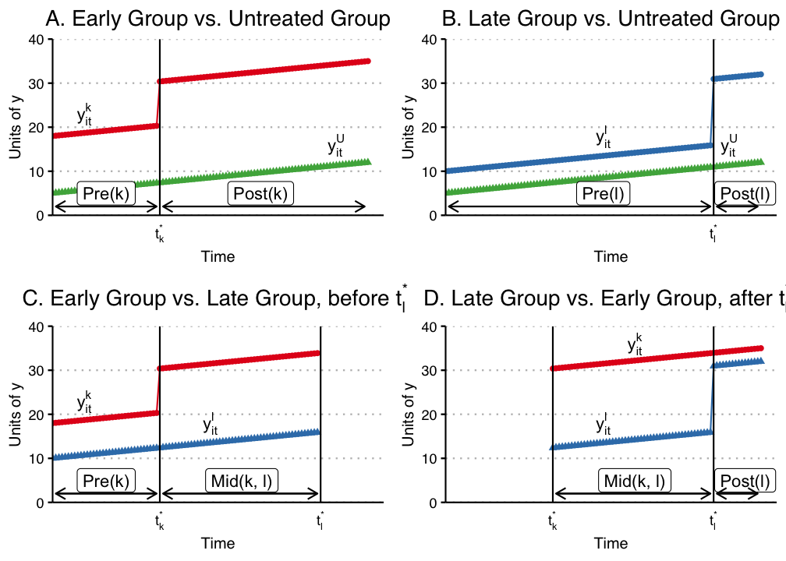
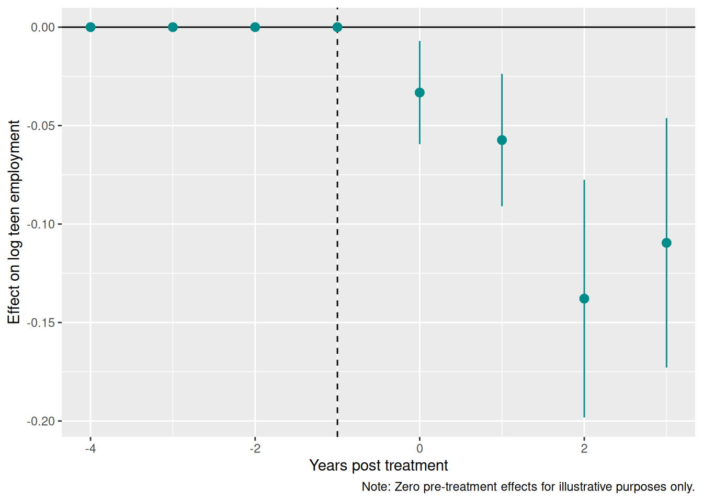
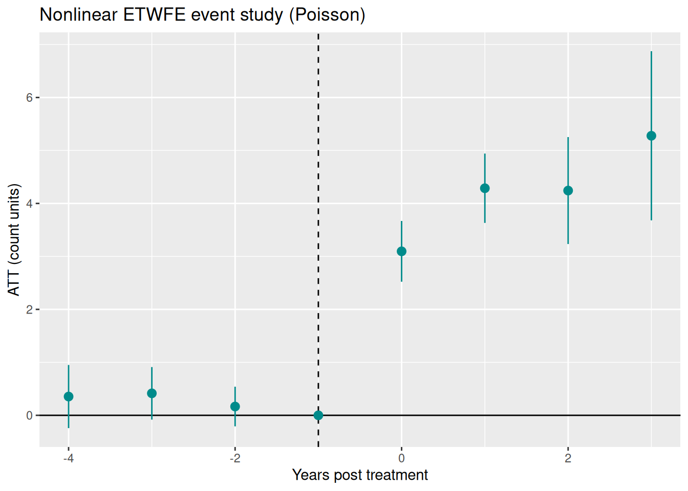
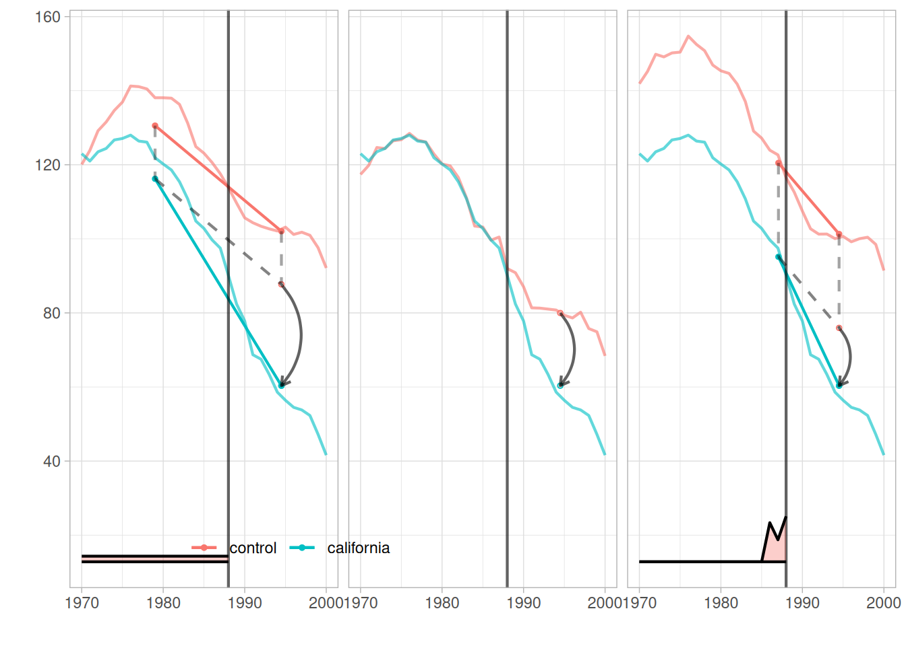

year countyreal lpop lemp first.treat treat
866 2003 8001 5.896761 8.461469 2007 1
841 2004 8001 5.896761 8.336870 2007 1
842 2005 8001 5.896761 8.340217 2007 1
819 2006 8001 5.896761 8.378161 2007 1
827 2007 8001 5.896761 8.487352 2007 1
937 2003 8019 2.232377 4.997212 2007 112 Difference-in-Differences
When unconfoundedness fails, we need weaker assumptions. The parallel trends assumption leads to the difference-in-differences estimator.
Related reading: For a side-by-side comparison of DiD, synthetic control, synthetic DiD, and multivariate SC on a single panel — and how the choice of estimator changes the answer — see the Same data, different estimators chapter in Topics on Econometrics and Causal Inference.
12.1 \(T=2\) Panel Data
Suppose we have two periods, \(t = (1,2)\). Some units are treated just prior to period 2. For each individual \(i\), there are four potential outcomes:
\[ [Y_{i1}(0), Y_{i1}(1), Y_{i2}(0), Y_{i2}(1)] \tag{12.1}\]
Let \(D\) denote the treated group. The ATT in period 2 is
\[ \tau_{2,att} = E(Y_2(1) - Y_2(0) | D=1) \tag{12.2}\]
The first term is observed. The second is the counterfactual.
12.2 Parallel Trends Assumption
\[ E[Y_2(0) -Y_1(0) | D=1] = E[Y_2(0) - Y_1(0) | D =0] \tag{12.3}\]
or
\[ E[\Delta Y(0) | D=1] = E[\Delta Y(0) | D =0] \tag{12.4}\]
In words, the change in untreated potential outcomes between periods 1 and 2 is the same for treated and control groups.
12.3 No Anticipation Assumption
\[ E[Y_1(1) - Y_1(0) | D=1] = 0 \tag{12.5}\]
This is to say, in period 1, there is no treatment effect for the treated group.
12.4 DiD is Identified with PT and NA
With Parallel Trends, we notice \[\small E[Y_2(0) | D=1 ]= E[Y_1(0) | D=1] + E[Y_2(0) - Y_1(0) | D=0] \tag{12.6}\]
Then, with No Anticipation, \[ \begin{aligned} E[Y_2(0) | D=1 ] &= E[Y_1(1) | D=1] + E[Y_2(0) - Y_1(0) | D=0]\\ &= E[Y_1 | D=1] + E[Y_2-Y_1 | D=0] \end{aligned} \tag{12.7}\]
\[\small \tau_{2,att} = E[Y_2 - Y_1 | D=1] - E[Y_2-Y_1 | D=0] \tag{12.8}\]
12.5 Advantages and Disadvantages of DiD
Advantages:
- No need to assume unconfoundedness. We “only” need PT and NA. Or say we don’t need treatment itself to be independent of potential outcomes, but we do need it to be independent to the change in potential outcome at least for untreated state. This is importantly weaker in a lot of situations. There can be selection bias. If the selection bias does not change over time, then DiD can handle it.
Disadvantages:
- PT and NA might be violated.
- PT is not scale free, in the sense that even if outcome can have PT, but then non-linear transformation of outcome won’t have PT (for example log of Y).
12.6 Traditional DiD
In practice, DiD in many period setting is usually done with
\[ Y_{it} = \alpha_i + \phi_t + W_{it} \beta + \epsilon_{it} \tag{12.9}\]
here \(W_{it} =(1[t=2] \cdot D_i)\), which is the interaction of post-treatment indicator and treatment group indicator.
This is usually called Two Way Fixed Effect (TWFE). There are multiple ways to implement the same model in practice.
TWFE can be done by “Pooled OLS”. That is, using OLS on time dummies and firm (individual) dummies. Wooldridge (2021) shows it’s equivalent to use treatment dummies, instead of individual dummies. He also shows that this model can be equivalently implemented with fixed effect model and random effect model.
12.7 TWFE with Staggered Treatment Timing
The problem comes in when there is different timing of treatment. People used to still use
\[ Y_{it} = \alpha_i + \phi_t + W_{it} \beta + \epsilon_{it} \tag{12.10}\]
where \(W_{it}\) now is a dummy when an individual \(i\) gets treated at time \(t\).
However, what is \(\beta\) here?
12.8 Goodman-Bacon Decomposition
Goodman-Bacon (2021) showed that \(\beta\) in the TWFE is a weighted average of many different treatment effects, between treated cohorts, and control units, both can be different at different time points. The weights are a function of the size of the subsample, relative size of treatment and control units, and the timing of treatment in the sub sample. The decomposition weights themselves are non-negative and sum to one; the problem is that the units treated earlier are used as controls later. When those “forbidden” 2x2 comparisons are expressed in terms of the underlying cohort-time ATTs, some ATTs receive negative weight (de Chaisemartin and D’Haultfœuille 2020). Therefore there is no meaningful interpretation of \(\beta\): it does not need to be a convex combination of treatment effects.


12.9 Wooldridge’s ETWFE
There are a lot of ways to deal with staggered DiD situation. Wooldridge (2021) is basically saying: This is not a problem of TWFE, it’s a mis-use of TWFE. The reason we get non-sensible result of \(\beta\) is that we know there is heterogeneous treatment effect, in the sense the treatment effect differs across cohort, but we force them to be the same. If we relax it, it can work. As he shows, this works when we specify cohort effects accordingly.
\[ y_{it} = \alpha_i + \phi_t + \sum_{g=g_0}^G \sum_{t=g}^T \lambda_{g,t} \times 1(g,t) + \epsilon_{i,t} \tag{12.11}\]
Here \(g\) is a cohort indicator, a cohort is determined by the time of getting treatment. ETWFE is allowing each cohort to have different effect at each different time point after being treated. The baseline group is the never treated group. If there is no never treated group, it can easily be changed to comparing to the last treated group.
12.10 Example 1: US Teen Employment
We’ll use the mpdta dataset on US teen employment from the did package. “Treatment” in this dataset refers to an increase in the minimum wage rate. Our goal is to estimate the effect of this minimum wage treatment (treat) on the log of teen employment (lemp). Notice that the panel ID is at the county level (countyreal), but treatment was staggered across cohorts (first.treat) so that a group of counties were treated at the same time. In addition to these staggered treatment effects, we also observe log population (lpop) as a potential control variable.
The three tables below give the panel shape: observations per year, the ever-treated indicator, and the treatment cohorts.
Code
table(mpdta$year)
2003 2004 2005 2006 2007
500 500 500 500 500 Code
table(mpdta$treat)
0 1
1545 955 Code
table(mpdta$first.treat)
0 2004 2006 2007
1545 100 200 655 The panel is balanced: 500 counties observed in each of 2003 through 2007, 2,500 observations. 955 observations belong to ever-treated counties and 1,545 to never-treated ones. The cohorts are 2004 (100 observations, so 20 counties), 2006 (200, or 40 counties) and 2007 (655, or 131 counties), with 309 counties never treated. Treatment timing is staggered, which is exactly the case where plain TWFE misbehaves.
We fit ETWFE with log population as a control, clustering on county.
Code
modOLS estimation, Dep. Var.: lemp
Observations: 2,500
Fixed-effects: first.treat: 4, year: 5
Standard-errors: Clustered (countyreal)
Estimate Std. Error t value Pr(>|t|)
lpop 1.065461 0.021824 48.821102 < 2.2e-16 ***
first.treat::2004:lpop 0.050982 0.037756 1.350320 0.177525
first.treat::2006:lpop -0.041095 0.047390 -0.867183 0.386259
first.treat::2007:lpop 0.055518 0.039212 1.415838 0.157447
year::2004:lpop 0.011014 0.007554 1.458043 0.145458
year::2005:lpop 0.020733 0.008104 2.558268 0.010814 *
year::2006:lpop 0.010535 0.010816 0.974084 0.330487
year::2007:lpop 0.020921 0.011808 1.771708 0.077053 .
... 14 coefficients remaining (display them with summary() or use
argument n)
... 10 variables were removed because of collinearity
(.Dtreat:first.treat::2006:year::2004,
.Dtreat:first.treat::2006:year::2005 and 8 others [full set in
$collin.var])
---
Signif. codes: 0 '***' 0.001 '**' 0.01 '*' 0.05 '.' 0.1 ' ' 1
RMSE: 0.537131 Adj. R2: 0.871722
Within R2: 0.869464The raw model has one coefficient per cohort-year cell plus the control interactions, 22 in all, and ten more were dropped for collinearity. That is not something to read directly. emfx() aggregates the cells into the ATT.
Code
emfx(mod)
.Dtreat Estimate Std. Error z Pr(>|z|) S 2.5 % 97.5 %
TRUE -0.0506 0.0125 -4.05 <0.001 14.3 -0.0751 -0.0261
Term: .Dtreat
Type: response
Comparison: TRUE - FALSEThe ATT is \(-0.0506\) with a standard error of 0.0125 and a 95% interval of \([-0.0751, -0.0261]\). Raising the minimum wage lowered teen employment by about 5% on average across treated county-years.
The same cells can be aggregated by time since treatment instead.
Code
mod_es = emfx(mod, type = "event")
mod_es
event Estimate Std. Error z Pr(>|z|) S 2.5 % 97.5 %
0 -0.0332 0.0134 -2.48 0.013 6.3 -0.0594 -0.00702
1 -0.0573 0.0171 -3.34 <0.001 10.2 -0.0910 -0.02373
2 -0.1379 0.0308 -4.48 <0.001 17.0 -0.1982 -0.07753
3 -0.1095 0.0323 -3.39 <0.001 10.5 -0.1729 -0.04620
Term: .Dtreat
Type: response
Comparison: TRUE - FALSEThe effect grows with exposure: \(-0.033\) in the treatment year, \(-0.057\) after one year, \(-0.138\) after two, \(-0.110\) after three. All four are significant. The standard errors widen with event time, from 0.013 to 0.032, because the later horizons rest on fewer cohorts: event time 0 uses all three cohorts (191 counties), event time 1 uses the 2004 and 2006 cohorts (60 counties), and event times 2 and 3 rest on the 2004 cohort alone (20 counties).
Adding post_only = FALSE keeps the pre-treatment periods in the plot.
Code
mod_es2 = emfx(mod, type = "event", post_only = FALSE)
ggplot(mod_es2, aes(x = event, y = estimate, ymin = conf.low, ymax = conf.high)) +
geom_hline(yintercept = 0) +
geom_vline(xintercept = -1, lty = 2) +
geom_pointrange(col = "darkcyan") +
labs(
x = "Years post treatment", y = "Effect on log teen employment",
caption = "Note: Zero pre-treatment effects for illustrative purposes only."
)
Read the pre-treatment points with care, and note the caption on the figure. With etwfe’s default comparison group the pre-treatment estimates are forced to zero by construction, so their sitting on the line is arithmetic, not evidence for parallel trends. The Poisson example below uses cgroup = "never", which frees them and makes the pre-period a real check.
12.11 Example 2: Staggered DiD
To see whether ETWFE recovers what it should, we switch to simulated data where the answer is recorded in the file.
data/did_staggered_6.dta is Wooldridge’s simulated staggered panel: 500 units observed annually from 2001 to 2006, 3,000 observations. Units are treated in 2004 (119 units), 2005 (83) or 2006 (36), and 262 are never treated. The outcome is y, x is a covariate, d4, d5 and d6 are cohort dummies, and f04, f05, f06 are year dummies. What makes the file useful is te4, te5 and te6: the true unit-level treatment effect each unit would experience under each cohort’s treatment date. The effects are heterogeneous across units and grow with time since treatment, which is precisely the configuration that breaks plain TWFE.
Code
# A tibble: 6 × 11
id year y x d4 d5 d6 te4 te5 te6 first_treat
<dbl> <dbl> <dbl> <dbl> <dbl> <dbl> <dbl> <dbl> <dbl> <dbl> <dbl>
1 1 2001 18.4 0.900 0 0 0 0 0 0 0
2 1 2002 18.1 0.900 0 0 0 0 0 0 0
3 1 2003 18.6 0.900 0 0 0 0 0 0 0
4 1 2004 16.5 0.900 0 0 0 1.43 0 0 0
5 1 2005 20.0 0.900 0 0 0 2.57 2.25 0 0
6 1 2006 19.9 0.900 0 0 0 5.07 4.23 0.786 0Code
table(did_data$first_treat)
0 2004 2005 2006
1572 714 498 216 The counts are observations, six per unit: 1,572 never-treated, 714 in the 2004 cohort, 498 in 2005, 216 in 2006.
Because the true effects are in the data, we can compute the target before estimating it. Grouping the true effects by cohort and year gives the true ATT in each cohort-year cell.
Code
did_data <- did_data %>%
mutate(treated_cohort1 = case_when(d4 & f04 ~ "d4f04",
d4 & f05 ~ "d4f05",
d4 & f06 ~ "d4f06"),
treated_cohort2 = case_when (
d5 & f05 ~ "d5f05",
d5 & f06 ~ "d5f06"),
treated_cohort3= case_when(
d6 & f06 ~ "d6f06"))
did_data %>%
group_by(treated_cohort1) %>%
summarise(mean4=mean(te4))# A tibble: 4 × 2
treated_cohort1 mean4
<chr> <dbl>
1 d4f04 3.76
2 d4f05 4.02
3 d4f06 4.58
4 <NA> 1.83Code
did_data %>%
group_by(treated_cohort2) %>%
summarise(mean5=mean(te5))# A tibble: 3 × 2
treated_cohort2 mean5
<chr> <dbl>
1 d5f05 2.74
2 d5f06 3.52
3 <NA> 0.978Code
did_data %>%
group_by(treated_cohort3) %>%
summarise(mean6=mean(te6))# A tibble: 2 × 2
treated_cohort3 mean6
<chr> <dbl>
1 d6f06 1.85
2 <NA> 0.329So the true cohort-year ATTs are: the 2004 cohort gains 3.76, 4.02 and 4.58 in 2004, 2005 and 2006; the 2005 cohort gains 2.74 and 3.52 in 2005 and 2006; the 2006 cohort gains 1.85 in 2006. (The NA rows are the units outside that cohort, which are not part of its ATT.) Effects grow with time since treatment and shrink across later cohorts — heterogeneity in both directions.
Averaging those cells over the 559 treated observations gives a true overall ATT of 3.677. That is the number ETWFE has to reproduce.
Code
OLS estimation, Dep. Var.: y
Observations: 3,000
Fixed-effects: first_treat: 4, year: 6
Standard-errors: Clustered (id)
Estimate Std. Error t value Pr(>|t|)
x 0.240952 0.452664 0.532298 0.5947564
first_treat::2004:x -1.191253 0.934130 -1.275254 0.2028127
first_treat::2005:x 0.551133 0.606947 0.908042 0.3642944
first_treat::2006:x 0.994478 0.827570 1.201685 0.2300556
year::2002:x 0.395894 0.327576 1.208558 0.2274050
year::2003:x 0.975554 0.319476 3.053604 0.0023818 **
year::2004:x 0.330593 0.350924 0.942064 0.3466155
year::2005:x 0.238847 0.398165 0.599869 0.5488659
... 13 coefficients remaining (display them with summary() or use
argument n)
... 18 variables were removed because of collinearity
(.Dtreat:first_treat::2004:year::2002,
.Dtreat:first_treat::2004:year::2003 and 16 others [full set in
$collin.var])
---
Signif. codes: 0 '***' 0.001 '**' 0.01 '*' 0.05 '.' 0.1 ' ' 1
RMSE: 2.92391 Adj. R2: 0.194759
Within R2: 0.110397Code
emfx(mod)
.Dtreat Estimate Std. Error z Pr(>|z|) S 2.5 % 97.5 %
TRUE 3.67 0.172 21.3 <0.001 333.2 3.33 4.01
Term: .Dtreat
Type: response
Comparison: TRUE - FALSEETWFE gives 3.67 with a standard error of 0.172 and a 95% interval of \([3.33, 4.01]\), against a true 3.677. It recovers the ATT to three decimals.
The same holds for the disaggregations. By time since treatment:
Code
mod_es = emfx(mod, type = "event")
mod_es
event Estimate Std. Error z Pr(>|z|) S 2.5 % 97.5 %
0 3.11 0.213 14.6 <0.001 158.5 2.69 3.53
1 4.02 0.248 16.2 <0.001 193.4 3.53 4.51
2 4.21 0.331 12.7 <0.001 120.9 3.56 4.86
Term: .Dtreat
Type: response
Comparison: TRUE - FALSEEstimated 3.11, 4.02 and 4.21 at event times 0, 1 and 2, against true values of 3.11, 3.81 and 4.58. Every interval covers its truth, and the estimates reproduce the growth in the effect with exposure.
And by calendar year:
Code
mod_es2 = emfx(mod, type = "calendar")
mod_es2
year Estimate Std. Error z Pr(>|z|) S 2.5 % 97.5 %
2004 3.51 0.303 11.6 <0.001 100.6 2.92 4.10
2005 3.73 0.253 14.7 <0.001 160.9 3.24 4.23
2006 3.70 0.249 14.8 <0.001 163.0 3.21 4.19
Term: .Dtreat
Type: response
Comparison: TRUE - FALSEEstimated 3.51, 3.73 and 3.70 in 2004, 2005 and 2006, against true values of 3.76, 3.49 and 3.80. Again all three intervals cover.
Note that the calendar profile is nearly flat while the event-time profile rises. There is no contradiction: later calendar years mix an older cohort with large accumulated effects and a newly treated cohort with small ones, and the two movements offset. This is why the aggregation has to be chosen to match the question being asked.
12.12 Nonlinear ETWFE: Count and Binary Outcomes
Related reading: The theory behind nonlinear ETWFE — Wooldridge’s conditional parallel-trends assumption on the linear index, the incidental parameters argument for cohort rather than unit intercepts, and the average partial effects that follow — is developed at length in Extended two-way fixed effects in Topics on Econometrics and Causal Inference, with count data and Poisson with exposure covering the count case in more detail.
ETWFE is not limited to linear (continuous) outcomes. When the dependent variable is a count or a binary indicator, linear TWFE can give nonsensical results — negative predicted probabilities, additive effects that ignore the bounded or non-negative nature of \(Y\). The etwfe package supports nonlinear families via the family argument, which passes to fixest::feglm().
The key identifying assumption shifts slightly. Instead of parallel trends on \(E[Y_{it}(\infty)]\), we assume parallel trends on the linear index — that is, on \(\log E[Y_{it}(\infty)]\) for Poisson, or on \(\text{logit}\, E[Y_{it}(\infty)]\) for logit. This is Wooldridge’s (2023) Conditional Parallel Trends assumption stated on \(G^{-1}(E[Y])\). When the true treatment effect is multiplicative (e.g., a policy raises counts by 50% regardless of baseline), this assumption is more natural than additive PT on \(Y\) itself.
One implementation detail matters: the nonlinear ETWFE specification uses cohort fixed effects (one intercept per treatment cohort) plus year fixed effects — not individual unit fixed effects. The etwfe package handles this automatically. In the linear case the two are numerically equivalent (Wooldridge 2021), but in nonlinear models unit fixed effects raise the incidental-parameters problem and make average partial effects uncomputable — the unit intercepts cannot be averaged out of the nonlinear link. Wooldridge (2023) instead uses cohort intercepts (a Mundlak device), which is what etwfe implements.
12.12.1 Simulated example: staggered count data
We simulate \(N = 400\) units over \(T = 6\) periods, 2,400 observations. Units are split into four groups of 100 by id: the first is treated from period 3, the second from period 4, the third from period 5, and the fourth never. Each unit draws a fixed effect \(\alpha_i \sim N(0, 0.3^2)\). The log mean is \(\log \mu_{it} = 1 + 0.2t + \alpha_i + 0.4 D_{it}\), and the outcome is \(Y_{it} \sim \text{Poisson}(\mu_{it})\).
The treatment effect is multiplicative and homogeneous on the log scale: every treated unit’s expected count rises by a factor of \(\exp(0.4)\), that is by \(\exp(0.4) - 1 = 0.492\), or 49%. Parallel trends holds on the log scale by construction, and fails on the level scale, since a constant proportional effect is a larger absolute effect for units with higher baselines.
On the count scale the ATT is not 0.492. It is \(E[\mu_{it}(0) \mid \text{treated}] \times (\exp(0.4)-1)\), and the mean untreated count among treated observations is 7.649, so the true ATT is \(7.649 \times 0.4918 = 3.762\) counts.
The table below reports mean counts by cohort and treatment status.
Code
library(tidyverse)
library(etwfe)
set.seed(42)
N <- 400; Tmax <- 6
unit_fe_vals <- rnorm(N) * 0.3
df_count <- expand.grid(id = 1:N, year = 1:Tmax) %>%
as_tibble() %>%
arrange(id, year) %>%
mutate(
cohort_grp = ((id - 1) %/% 100) + 1,
first_treat = c(3, 4, 5, 0)[cohort_grp], # 0 = never treated
treated = (first_treat > 0) & (year >= first_treat),
unit_fe = unit_fe_vals[id],
log_mu = 1 + 0.2 * year + unit_fe + 0.4 * treated,
count = rpois(n(), exp(log_mu))
)
df_count %>%
group_by(first_treat, treated) %>%
summarise(mean_count = mean(count), .groups = "drop")# A tibble: 7 × 3
first_treat treated mean_count
<dbl> <lgl> <dbl>
1 0 FALSE 6.15
2 3 FALSE 3.72
3 3 TRUE 10.7
4 4 FALSE 4.29
5 4 TRUE 11.5
6 5 FALSE 4.80
7 5 TRUE 13.2 The never-treated group averages 6.15 counts. Treated cohorts average 3.72, 4.29 and 4.80 before treatment and 10.7, 11.5 and 13.2 after. The pre-treatment means look low only because they are drawn from earlier periods, and the time trend adds 0.2 to the log mean each period. This is exactly the comparison that a raw before-after difference would get wrong.
12.12.2 Poisson ETWFE
Pass family = "poisson" to etwfe(). Everything else — cohort dummies, emfx(), event study — works identically to the linear case. We use cgroup = "never" so that pre-treatment estimates are not mechanistically forced to zero.
Code
mod_pois <- etwfe(
fml = count ~ 1,
tvar = year,
gvar = first_treat,
data = df_count,
family = "poisson",
cgroup = "never",
vcov = ~id
)Code
emfx(mod_pois)
.Dtreat Estimate Std. Error z Pr(>|z|) S 2.5 % 97.5 %
TRUE 3.99 0.33 12.1 <0.001 109.6 3.34 4.64
Term: .Dtreat
Type: response
Comparison: TRUE - FALSEThe estimate is 3.99 counts with a standard error of 0.33 and a 95% interval of \([3.34, 4.64]\), against the true 3.762 derived above. The interval covers it.
emfx() returns average marginal effects — the average difference \(E[Y(1)] - E[Y(0)]\) in count units across treated observations. This is the ATT on the count scale. The underlying model imposes PT on the log scale, so each cohort-time treatment coefficient in the raw model can be exponentiated to get the incidence rate ratio for that cell (here they share a common value because the simulated effect is homogeneous).
12.12.3 Event study
Because we passed cgroup = "never", the pre-treatment estimates are free parameters rather than zeros by construction, so the pre-period is an actual test here. On the count scale the post-treatment effect should also grow with event time even though the log-scale effect is constant, because the baseline count grows with the time trend: the true values are 3.13, 3.82, 4.17 and 4.69 at event times 0 through 3.
Code
mod_pois_es <- emfx(mod_pois, type = "event", post_only = FALSE)
ggplot(mod_pois_es, aes(x = event, y = estimate, ymin = conf.low, ymax = conf.high)) +
geom_hline(yintercept = 0) +
geom_vline(xintercept = -1, lty = 2) +
geom_pointrange(col = "darkcyan") +
labs(
x = "Years post treatment",
y = "ATT (count units)",
title = "Nonlinear ETWFE event study (Poisson)"
)
Pre-treatment estimates are close to zero, confirming parallel trends on the log scale holds in the simulation. The post-treatment points rise with event time, which is the count-scale consequence of a constant log-scale effect applied to a growing baseline, not evidence of a growing treatment effect.
12.12.4 Comparison: linear ETWFE on log(count + 1)
A common alternative is to log-transform the count and run linear ETWFE. This is biased when zeros are present (the \(+1\) shift distorts the linear index) and misinterprets the scale of the effect. For comparison:
Code
.Dtreat Estimate Std. Error z Pr(>|z|) S 2.5 % 97.5 %
TRUE 0.38 0.0319 11.9 <0.001 106.8 0.318 0.443
Term: .Dtreat
Type: response
Comparison: TRUE - FALSEThe linear model returns 0.38 with a 95% interval of \([0.318, 0.443]\). That number is neither the count-scale ATT of 3.99 nor the log-scale parameter 0.4, though it happens to sit near the latter because the counts here are large enough that \(\log(Y+1) \approx \log Y\). With many zeros the approximation breaks and the estimate drifts.
The linear model estimates the ATT on the \(\log(Y+1)\) scale — not the same quantity as the Poisson ATT and harder to interpret. When treatment effects are multiplicative, Poisson ETWFE is the more appropriate model.
12.13 Spatial Interference
Everything in this chapter so far assumes SUTVA: one unit’s outcome does not depend on another unit’s treatment. That is not always plausible. A treated municipality may affect deforestation in nearby untreated municipalities. A vaccinated household may reduce transmission to nearby households. A labor-market policy in one commuting zone may change flows to its neighbors. With this kind of spatial spillover, the usual DiD estimand no longer has the interpretation we want. Xu (2023) shows that ignoring interference can produce an estimand that is neither a direct effect nor a spillover effect.
Xu (2023, 2026) develops a doubly robust DiD that keeps the identifying logic of conditional parallel trends but adds an exposure mapping \(G_{it} = G(i, W_{-it})\) for unit \(i\)’s neighborhood treatment status. The estimand is the direct ATT at exposure level \(g\),
\[ \tau_g(t, c) = \frac{1}{|S_M|} \sum_{i \in S_M} \mathbb{E}[y_{it}(c, g) - y_{it}(\infty, g) \mid z_i, C_i = c, G_{it} = g], \tag{12.12}\]
where \(C_i\) is unit \(i\)’s first treatment period (so \(\{C_i > t\}\) is the not-yet-directly-treated comparison group), \(S_M = \{C_i = c\} \cup \{C_i > t\}\), and \(g\) is a chosen exposure level. The DR plug-in averages three pieces over \(S_M\): an IPW term from the treated cohort, an IPW term from the not-yet-treated, and a regression-imputation term, with three propensity models (\(\eta_{tc}\) for cohort, \(\eta_{tcg}\) and \(\eta_{t\infty g}\) for exposure) and two outcome-change regressions. It is consistent if either all three propensities or both outcome models are correctly specified.
The companion package didint implements this. The 2x2 base case (Xu 2023):
For staggered adoption (Xu 2026), did_int_staggered() loops over (cohort, time) cells with \(t \geq c\), restricts to \(S_M\) in each cell, fits the DR estimator, and aggregates across cells using joint-IF stacking (per-cell IFs share the never-treated comparison group, so independence-style SEs underestimate uncertainty noticeably). The vignettes/brazil_amazon.Rmd vignette of didint replicates Section III of Xu (2026), the Lista de Municípios Prioritários policy on Amazon deforestation, using the public Assunção-McMillan-Murphy-Souza-Rodrigues replication archive on Zenodo.
A Julia port with identical estimators is available as DidInterference.jl.
12.14 Persistent Outcomes and Heterogeneous Dynamics
Standard event-study TWFE regressions like
\[ Y_{it} = \alpha_i + \gamma_t + \sum_{j} D_{it}^j \delta_j + X_{it}'\beta + U_{it} \tag{12.13}\]
implicitly assume the residual has no serial dependence once unit and time fixed effects are absorbed. When outcomes are genuinely persistent — earnings, employment, consumption, anything with habits or adjustment costs — that assumption fails. The event-time dummies pick up the persistence on top of the true causal effect, producing spurious pre-trends and biased post-treatment estimates. With a true AR(1) DGP and persistence \(\rho_Y\), the omitted-variable bias on the event-time coefficients grows geometrically with the event-time horizon (Botosaru and Liu, 2025, Figure 1).
Botosaru and Liu (2025) introduce a dynamic panel with correlated random coefficients that handles both persistence and unit-level heterogeneity in dynamic responses:
\[ Y_{it} = \rho_Y Y_{i,t-1} + \alpha_i + \sum_j D_{it}^j \delta_{ij} + X_{it}'\beta + U_{it}, \tag{12.14}\]
with a parsimonious AR(1) structure on the event-time effects to keep dimensionality manageable:
\[ \delta_{ij} = \rho_\delta \delta_{i,j-1} + \varepsilon_{ij}, \quad j \geq 1. \tag{12.15}\]
The latent \(\lambda_i = (\alpha_i, \delta_{i0})\) is a unit-specific correlated random coefficient. A two-step semiparametric estimator: step 1 is quasi-maximum likelihood for the common parameters \((\rho_Y, \rho_\delta, \sigma_U^2, \sigma_\varepsilon^2, \beta)\) under a Gaussian working assumption on \(\lambda_i\) (consistent under misspecification of that working assumption); step 2 is Tweedie / Gaussian-conjugate empirical Bayes for the unit-level posterior trajectories \(\{\delta_{i,j}\}_{j=0}^J\), achieving asymptotic ratio optimality.
A companion paper (Botosaru and Liu 2026) adds a homogeneous-feedback extension: covariates \(X_{it}\) are allowed to adjust endogenously to past \(Y\) and treatment (the canonical example: minimum-wage policy affects wages directly and also indirectly through firms re-optimising input demand). Under the assumption that the covariate adjustment rule does not depend on \(\lambda_i\) given the observable history, the likelihood factors into a structural piece (for \(Y \mid X\), history) and a feedback piece (for \(X\) given history), each separately identified. The factorisation yields a clean decomposition of dynamic treatment effects into direct (through \(\delta_{i,j}\)) and indirect (through covariate feedback) components.
The package tvhte implements both papers:
Code
library(tvhte)
# Fit on a panel with staggered cohorts and a covariate
fit <- tvhte(Y = panel_Y, Y0 = baseline_Y, t0 = cohort,
J = max_event_time, X = panel_X)
print(fit)
# Feedback model + direct/indirect counterfactual decomposition
fb <- fit_feedback(panel_Y, baseline_Y, panel_X, baseline_X)
cf <- simulate_counterfactual(fit, fb, t0_star = alt_cohort)A Julia port with the same API is at TVHTE.jl; both packages have deployed docs at https://xiangao.github.io/tvhte/ and https://xiangao.github.io/TVHTE.jl/.
12.15 Synthetic Control
The biggest problem with DiD is the PT assumption. There is not really a test for it, just like the unconfoundedness assumption. It is less demanding than unconfoundedness assumption, but nevertheless hard to justify sometimes.
Abadie (2010)’s idea is to construct a control unit, out of many control units (donor pool), which is a weighted average of all donor units, that then hopefully is very close to the treated unit in terms of outcome, in the pre-treatment periods. This works pretty well in practice, when you have a somewhat large donor pool. Of course there is still no test for post-treatment period, but for pre-treatment periods, usually it can get almost identical trend as the treated unit. This was designed for single treated unit at the beginning, but got extended to multiple treated units later on.
12.16 Synthetic DiD
Arkhangelsky et al (2021) tries to combine the idea of DiD and SC. SC assigns different weights to different control units. The standard DiD is a TWFE, assigning equal weights to all time periods and units.
To see that, DiD objective function:
\[ \small (\hat \tau^{did}, \hat \mu, \hat \alpha, \hat \beta) = \underset{\tau, \mu, \alpha, \beta}{argmin} { \Sigma_{i=1}^N \Sigma_{t=1}^T (Y_{it} - \mu - \alpha_i - \beta_t - W_{it} \tau)^2} \tag{12.16}\]
SC objective function: \[ (\hat \tau^{sc}, \hat \mu, \hat \beta) = \underset{\tau, \mu, \beta}{argmin} { \Sigma_{i=1}^N \Sigma_{t=1}^T \hat \omega_i^{sc} (Y_{it} - \mu - \beta_t - W_{it} \tau)^2} \tag{12.17}\]
It’s a unit-weighted regression with time effects. The weights are set to optimally match donor units to treated unit so that they are as close as possible, in each time point. Note there is no \(\alpha_i\), since it’s forced to be 0 — so SC is not simply DiD with weights: it also drops the unit fixed effects. The clean nesting is through SDiD below: DiD is SDiD with all unit and time weights set to 1, and SC is SDiD with the \(\alpha_i\) removed and time weights set to 1.
SDiD:
\[ \small (\hat \tau^{sdid}, \hat \mu, \hat \alpha, \hat \beta) = \underset{\tau, \mu, \alpha, \beta}{argmin} { \Sigma_{i=1}^N \Sigma_{t=1}^T \hat \omega_i^{sdid} \hat \lambda_t^{sdid} (Y_{it} - \mu - \alpha_i - \beta_t - W_{it} \tau)^2} \tag{12.18}\]
SDiD sets another weight in addition to SC weights, which changes over time. The SC weights are trying to construct a control unit that is close to the treated unit; the SDiD weights are trying to put more weights on pre-treatment periods that are more similar to post-treatment periods.
12.16.1 Example: California Proposition 99
The california_prop99 panel is annual per-capita cigarette sales in packs for 39 US states from 1970 to 2000. California raised its cigarette tax in 1989, so there is one treated unit, 38 controls, 19 pre-treatment years and 12 post-treatment years. The estimand is the effect of Proposition 99 on California’s cigarette consumption.
Code
library(synthdid)
data('california_prop99')
setup = panel.matrices(california_prop99)
tau.hat = synthdid_estimate(setup$Y, setup$N0, setup$T0)Code
summary(tau.hat)$estimate
[1] -15.60383
$se
[,1]
[1,] NA
$controls
estimate 1
Nevada 0.124
New Hampshire 0.105
Connecticut 0.078
Delaware 0.070
Colorado 0.058
Illinois 0.053
Nebraska 0.048
Montana 0.045
Utah 0.042
New Mexico 0.041
Minnesota 0.039
Wisconsin 0.037
West Virginia 0.034
North Carolina 0.033
Idaho 0.031
Ohio 0.031
Maine 0.028
Iowa 0.026
$periods
estimate 1
1988 0.427
1986 0.366
1987 0.206
$dimensions
N1 N0 N0.effective T1 T0 T0.effective
1.000 38.000 16.388 12.000 19.000 2.783 The point estimate, \(-15.6\), is the headline number from Arkhangelsky et al. (2021). Note that the se entry comes back NA, and that is not a glitch to skim past: summary() defaults to a jackknife standard error, which deletes one treated unit at a time. California is the only treated unit here, so deleting it leaves nothing to estimate and the jackknife is undefined. The bootstrap SE fails for the same reason. With a single treated unit the usable option is the placebo method, which builds the reference distribution by pretending each control state was treated:
Code
N0 = 38 control states, T0 = 19 pre-periods, N1 = 1 treated unitCode
se_placebo <- as.numeric(synthdid_se(tau.hat, method = "placebo"))
cat(sprintf("SDiD estimate %.2f, placebo SE %.2f, 95%% CI [%.2f, %.2f]\n",
as.numeric(tau.hat), se_placebo,
as.numeric(tau.hat) - 1.96 * se_placebo,
as.numeric(tau.hat) + 1.96 * se_placebo))SDiD estimate -15.60, placebo SE 8.37, 95% CI [-32.01, 0.80]Two cautions on that interval. The placebo standard error is a permutation quantity, so it moves with the seed — report the seed, or average over several. And it is justified under the assumption that the treated unit is exchangeable with the controls, which is a real assumption about California, not a technicality. The interval here comfortably includes zero, which is worth stating plainly: the much-cited \(-15.6\) is not statistically distinguishable from no effect with 38 control states and one treated unit. Note also that summary(tau.hat, se.method = "placebo") does not fix the NA — the se field stays empty; synthdid_se() has to be called directly.
The summary output is also worth reading past the point estimate. The unit weights are concentrated: Nevada takes 0.124, New Hampshire 0.105, Connecticut 0.078, and the effective number of controls is 16.4 out of 38. The time weights put 0.427 on 1988, 0.366 on 1986 and 0.206 on 1987, giving an effective 2.8 pre-periods out of 19. Both are the point of the method — weight the donors and the pre-periods that resemble the target — and both are the reason the inference is hard.
Running the same panel through all three estimators shows what the weighting does:
Code
tau.sc = sc_estimate(setup$Y, setup$N0, setup$T0)
tau.did = did_estimate(setup$Y, setup$N0, setup$T0)
estimates = list(tau.did, tau.sc, tau.hat)
names(estimates) = c('Diff-in-Diff', 'Synthetic Control', 'Synthetic Diff-in-Diff')
print(unlist(estimates)) Diff-in-Diff Synthetic Control Synthetic Diff-in-Diff
-27.34911 -19.61966 -15.60383 Plain DiD gives \(-27.35\), synthetic control \(-19.62\), and synthetic DiD \(-15.60\). The three differ by more than the placebo standard error of 8.37, so the choice of estimator matters more here than the sampling uncertainty within any one of them. DiD weights every control state and every pre-period equally, which is why it moves furthest: states unlike California, and pre-periods unlike the late 1980s, all count in full.
Code
plot <- synthdid_plot(estimates, facet.vertical=FALSE,
control.name='control', treated.name='california',
lambda.comparable=TRUE, se.method = 'none',
trajectory.linetype = 1, line.width=.75, effect.curvature=-.4,
trajectory.alpha=.7, effect.alpha=.7,
diagram.alpha=1, onset.alpha=.7) +
theme(legend.position=c(.26,.07), legend.direction='horizontal',
legend.key=element_blank(), legend.background=element_blank(),
strip.background=element_blank(), strip.text.x = element_blank())Code
plot
Each panel shows California’s trajectory against the weighted control trajectory, with the estimated effect drawn as the gap after 1989. The time weights \(\lambda_t\) are plotted along the bottom, so the pre-periods that actually enter the comparison are visible: for synthetic DiD they concentrate on 1986 to 1988, the years just before the tax change. The synthetic control and synthetic DiD panels track California closely before 1989; the DiD panel does not, which is the visual counterpart to its larger estimate.